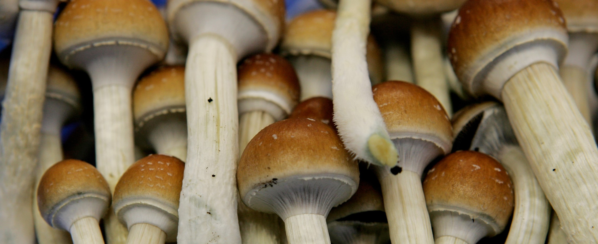

Psilocybin Mushrooms as a treatment for Depression, Anxiety, PTSD and Addiction
Introduction
Disclaimer: Psychadelic Mushrooms and the active componenet Psilocin and its phosphorylated counterpart Psilocybin are Federally Illegal in the United States as Schedule I Drugs. This website is purely educational and does not condone breaking federal law.
Psilocybin Mushrooms are an informal group of fungus that contain the psychoactive chemical compound psilocybin, with the most potent and commonly used specimens being found in the “Psilocybe” genus. The effects of Psilocybin can be compared to those of LSD and DMT.
Psilocybin Mushrooms and Psychadelic Mushrooms are synonymous with each other, with the former referring to the active chemical within them, and the latter being the common name.
These fascinating fungi have been used in religious practices dating all the way back to before recorded history, with images of them being found in cave paintings.
Despite the near constant fear mongering campaign around psychedelics, and especially mushrooms, that has been kept up by the federal government and pharmaceutical industries over the past 70 years, the United States Food and Drug Administration has recently cleared them for medicinal use after an outpour of scientific studies on the subject over the past couple of decades.
Works Cited
-
“Psilocybin Mushrooms Fact Sheet .” Drug Policy Alliance, www.drugpolicy.org/sites/default/files/Psilocybin_Mushrooms_Fact_Sheet.pdf.
-
POLLAN, MICHAEL. HOW TO CHANGE YOUR MIND: the New Science of Psychedelics. NIELSEN BOOKDATA, 2019.
-
Haines, Gavin. “Down the Rabbit Hole: Treating Depression with Psychedelics.” Positive News, 20 July 2020, www.positive.news/lifestyle/body-mind/down-the-rabbit-hole-treating-depression-with-psychedelic-drugs/.
-
Wark C, Galliher JF (2009). "Timothy Leary, Richard Alpert (Ram Dass) and the changing definition of psilocybin". The International Journal on Drug Policy. 21 (3): 234–9
-
Dos Santos RG, Osório FL, Crippa JA, Riba J, Zuardi AW, Hallak JE (June 2016). "Antidepressive, anxiolytic, and antiaddictive effects of ayahuasca, psilocybin and lysergic acid diethylamide (LSD): a systematic review of clinical trials published in the last 25 years". Therapeutic Advances in Psychopharmacology. 6 (3): 193–213.
-
Romero, Author: Morgan. “Oregon Measure 109: Voters to Weigh Legalizing Psilocybin for Mental Health Therapy.” Kgw.com, 20 Oct. 2020, www.kgw.com/article/news/politics/elections/oregon-measure-109-psilocybin-therapy-election/283-8805ddb6-7a61-4182-95ae-640fda00235f.
-
“COMPASS Pathways Receives FDA Breakthrough Therapy Designation.” Compass Pathways, 3 Sept. 2020, compasspathways.com/compass-pathways-receives-fda-breakthrough-therapy-designation-for-psilocybin-therapy-for-treatment-resistant-depression/.
-
Naftulin, Julia. “Gwyneth Paltrow Sent Her Employees to Take Psychedelic Mushrooms in Jamaica. One Staffer Said She Felt like She'd Undergone 5 Years of Therapy.” Insider, Insider, 5 Feb. 2020, www.insider.com/goop-staffers-went-on-a-psychedelic-mushroom-retreat-in-jamaica-2020-1.
-
Solon, Olivia. “Study Finds Mushrooms Are the Safest Recreational Drug.” The Guardian, Guardian News and Media, 24 May 2017, www.theguardian.com/society/2017/may/23/study-hallucinogenic-mushrooms-safest-recreational-drug-lsd.
-
Ridden, Paul. “Johns Hopkins Study Finds Psilocybin Dosage 'Sweet Spot' for Positive and Lasting Effects.” New Atlas, 2 May 2015, www.newatlas.com/johns-hopkins-psilocybin-study-finds-optimum-beneficial-dosage/18981/
-
Roseman, Leor, et al. “Increased Amygdala Responses to Emotional Faces after Psilocybin for Treatment-Resistant Depression.” Neuropharmacology, Pergamon, 27 Dec. 2017, www.sciencedirect.com/science/article/pii/S0028390817306391.
-
Curley, Bob. “FDA Puts ‘Magic Mushroom’ Ingredient on Fast Track for Depression Treatment.” Healthline, 2018, www.healthline.com/health-news/fda-looking-at-magic-mushroom-ingredient-to-treat-depression.
-
Bauer, Barbara E. “Study Confirms Psilocin Binding to 5-HT2A Causes Psilocybin Psychedelic Experience.” Psychedelic Science Review, 16 Oct. 2020, www.psychedelicreview.com/study-confirms-the-role-of-the-5-ht2a-receptor-in-the-psilocybin-psychedelic-experience/
-
Polito, Vince, and Richard J Stevenson. “A Systematic Study of Microdosing Psychedelics.” PloS One, Public Library of Science, 6 Feb. 2019, www.ncbi.nlm.nih.gov/pmc/articles/PMC6364961/.
-
Mikkelson, David, and David Mikkelson. “Orange Juice LSD Man.” Snopes.com, www.snopes.com/fact-check/citric-acid-trip/.
-
Siddique, Haroon. “Magic Mushrooms 'Reboot' Brain in Depressed People – Study.” The Guardian, Guardian News and Media, 13 Oct. 2017, www.theguardian.com/science/2017/oct/13/magic-mushrooms-reboot-brain-in-depressed-people-study.
-
Petri, G., et al. “Homological Scaffolds of Brain Functional Networks.” Journal of The Royal Society Interface, vol. 11, no. 101, 2014, p. 20140873., doi:10.1098/rsif.2014.0873.
-
“Psychedelic Insights.” Psychedelic Assisted Therapy Amsterdam, 18 Oct. 2020, www.psychedelicinsights.com/.